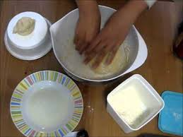
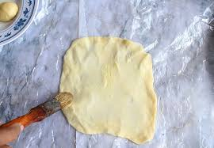

Bahan-bahan
- 250 gr tepung terigu
- 1 butir telur
- 3 sdm margarin, lelehkan
- 100 ml air hangat
- 2 sdm susu bubuk(optional)
- 1/2 sdt garam
- margarin leleh untuk olesan
- minyak untuk merendam
Langkah-langkah:
-
Campur semua bahan roti jadi satu

-
Uleni sampai kalis
 -
Kalisnya adonan canai tidak sekalis adonan roti, kira2 seperti ini sudah cukup
